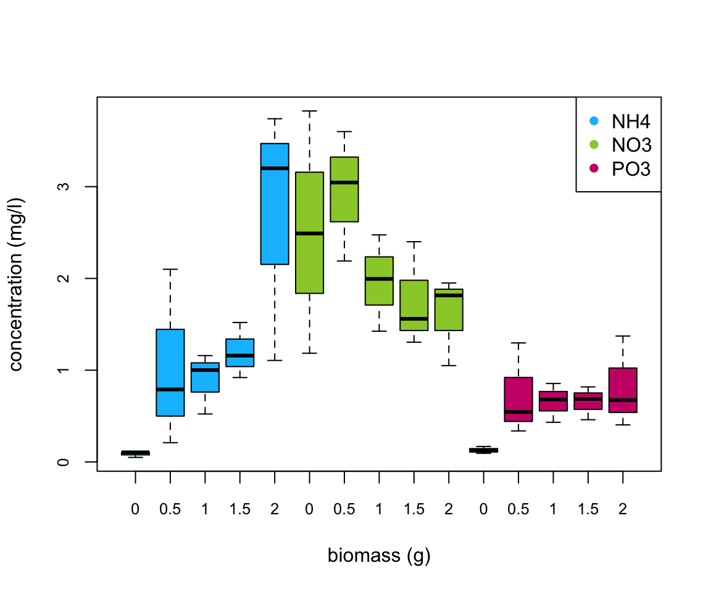
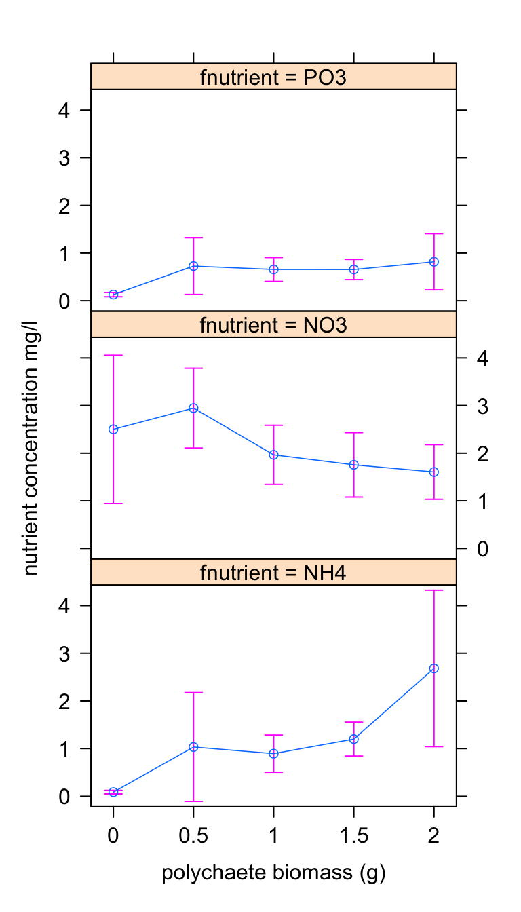

BI5302 Variance Heterogeneity Practical
Alex Douglas
18 December, 2020
Setup global options for knitr package. Normally I wouldn’t display these but I’ll leave them here for your information. The arguments width.cutoff and tidy = TRUE keeps the displayed code within the code boxes (see what happens if you omit this).
knitr::opts_chunk$set(echo=TRUE,tidy.opts=list(width.cutoff=55),tidy=TRUE)
Benthic Biodiversity experiment
These data were obtained from a mesocosm experiment which aimed to examine the effect of benthic polychaete (Hediste diversicolor) biomass on sediment nutrient release (NH4, NO3 and PO3). At the start of the experiment replicate mesocosms were filled with homogenised marine sediment and assigned to one of five polychaete biomass treatments (0, 0.5, 1, 1.5, 2 g per mesocosm). The mesocosms were allowed to acclimatise for 24 h after which the concentration of either NH4, NO3 or PO3 was measured in the water. The concentration of only one nutrient was measured in each mesocosm. The researchers were particularly interested in whether the nutrient concentration differed between polychaete biomass treatments and whether these effects were dependent on the nutrient.
1. Create a new R markdown document in your BI5302 RStudio project and save it using a suitable file name. I suggest you specify the default output format as html but feel free to experiment with pdf (you can always change this later). Use this R markdown document to record your data exploration, statistical analysis (including graphs and tables) and commentary. For this exercise I would also suggest that you embed your R code as visible chunks within the document (use echo = TRUE) for later reference.
Import all the packages required for this exercise:
library(nlme)
library(effects)
library(ggplot2) # this is optional
2. Import the Hediste.txt dataset into R and assign it to a suitably named variable. Remember if you’re using R version > 4.0.0 (most of you will be) then columns containing character strings will be imported into R as character type variables not as factors by default. You can either use the argument stringsAsFactors = TRUE when you use the read.table() function to automatically convert character type variables to factors when you import your data or you can use the read.table() function without the stringsAsFactors = TRUE argument and then covert them after you import your data. Examine the structure of the dataframe and convert the biomass variable to a factors and store it as a new variable in your dataframe.
nereis <- read.table("data/Hediste.txt", header = TRUE,
stringsAsFactors = TRUE)
nereis$fbiomass <- factor(nereis$biomass)
str(nereis)
## 'data.frame': 45 obs. of 4 variables:
## $ concentration: num 0.05 0.105 0.105 0.79 0.21 ...
## $ biomass : num 0 0 0 0.5 0.5 0.5 1 1 1 1.5 ...
## $ fnutrient : Factor w/ 3 levels "NH4","NO3","PO3": 1 1 1 1 1 1 1 1 1 1 ...
## $ fbiomass : Factor w/ 5 levels "0","0.5","1",..: 1 1 1 2 2 2 3 3 3 4 ...
3. How many replicates are there for each biomass and nutrient combination?
xtabs(~fbiomass + fnutrient, data = nereis)
## fnutrient
## fbiomass NH4 NO3 PO3
## 0 3 3 3
## 0.5 3 3 3
## 1 3 3 3
## 1.5 3 3 3
## 2 3 3 3
There are 3 replicates per fbiomass and fnutrient combination.
4. Explore these data graphically. Are there any obvious outliers in the concentration variable for each of the biomass or nutrient variable levels (perhaps the dotchart() function with the group argument might help)? Use an appropriate plot to examine whether there are any biomass and/or nutrient effects on concentration (perhaps a boxplot?). Do you notice a potential issue regarding the between group variances?
dotchart(nereis$concentration, groups = nereis$fnutrient,
col = as.numeric(nereis$fnutrient), xlab = "Concentration",
ylab = "Order of observations")
dotchart(nereis$concentration, groups = nereis$fbiomass,
col = as.numeric(nereis$fbiomass), xlab = "Concentration",
ylab = "Order of observations")
There doesn’t appear to be any obvious outliers in the concentration variable for the fbiomass and fnutrient groups.
Are there any differences in concentration between the biomass treatment? Are these differences dependent on the type of nutrient? Let’s use a boxplot to explore this further (see the end of this document for an alternative approach to creating this boxplot using the ggplot() function).
boxplot(concentration ~ fbiomass * fnutrient, xlab = "biomass (g)",
main = "", ylab = "concentration (mg/l)", data = nereis,
cex.axis = 0.8, col = rep(c("deepskyblue", "yellowgreen",
"deeppink3"), each = 5), names = rep(c(0, 0.5, 1,
1.5, 2), 3))
legend("topright", col = c("deepskyblue", "yellowgreen",
"deeppink3"), legend = c("NH4", "NO3", "PO3"), pch = 16)
There does appear to be a difference in the nutrient concentration between biomass treatments and this seems to be dependent on the nutrient type. Overall, NO3 has the highest nutrient concentration compared to NH4 and PO3. Nutrient concentration appears to be consistently low for PO3 regardless of polychaete biomass whereas for NH4 the concentration increases with biomass and for NO3 the concentration decreases with an increase in biomass. This suggests that there is an interaction between biomass and nutrient type.
5. With reference to the study aims stated above, fit an appropriate linear model to these data using the lm() function.
nereis.lm <- lm(concentration ~ fbiomass * fnutrient, data = nereis)
The code above fits a linear model using the lm() function with concentration as the response variable and fbiomass and fnutrient as explanatory variables. It also includes an interaction between fbiomass and fnutrient.
6. Use appropriate residual plots to identify whether the modelling assumptions are met. Don’t forget to also plot the residuals from this model against all explanatory variables. Can you see a problem? Can you assume homogeneity of variance of the residuals from your model? If not, then try to identify the cause of this problem. Make sure you describe and discuss this process in your Rmarkdown document.
First let’s create the usual residual plots using the plot() function on the lm model object nereis.lm. Don’t forget to split the plotting device into 2 rows and 2 columns so we can visualise all the plots together.
par(mfrow = c(2, 2))
plot(nereis.lm)
From the Residual vs Fitted and Scale-Location plots (left-hand side) you can clearly see that the residual variance is different for each of the treatment groups. Larger fitted values have a wider spread and small fitted values a narrower spread. This is a clear violation of the homogeneity of variance assumption!
Let’s try to find which of the explanatory variable(s) is responsible for these differences in residual variance. First we plot the residuals from our linear model against the fbiomass variable.
plot(resid(nereis.lm) ~ nereis$fbiomass, xlab = "Biomass",
ylab = "Residuals")
abline(h = 0, lty = 2, col = 2)
There are clear differences in the residual variance between each of the biomass levels. The zero biomass treatment has very little residual variance (as we might expect - why?) whereas the highest biomass group (2 g) has a very large within group variance. There are also differences between the other biomass groups but these are less pronounced.
We should also plot the residuals from our model against the fnutrient explanatory variable.
plot(resid(nereis.lm) ~ nereis$fnutrient, xlab = "Nutrient",
ylab = "Residuals")
abline(h = 0, lty = 2, col = 2)
Again, the residual variance between the three nutrient types is different. The PO3 nutrient appears to have the smallest variance whereas the NO3 nutrient has the largest variance. Both of these plots suggest that the cause of our heterogeneity of variance is both the fbiomass and fnutrient variables. Therefore we need fit a model that allows for different variances in each of our fbiomass and fnutrient variables. To do this we will fit a Generalised Least Squares model using the gls() function from the nlme package.
7. Import the nlme package into R.
# I usually import any packages I am going to use in my
# analysis at the top of my R script or R markdown
# document. See above.
# if you want to do it here then library(nlme)
You will see that I have already done this at the top of this Rmarkdown document using the library() function. It’s good practice to import all the packages required for a particular analysis near the start of your script.
8. Use the gls() function from the nlme package without any variance covariates to refit your linear model specified above (the model you fitted using the lm() function). This GLS model with no variance structure is equivalent to a standard linear model. You will use this GLS model to compare with models you subsequently fit. If you are not convinced that these two models are equivalent then compare the output from both models (and replot the residuals if you’re still not convinced!). Why do you need to refit this model using the gls() function? (Hint: take a look at the AICs from both models).
nereis.gls1 <- gls(concentration ~ fbiomass * fnutrient,
data = nereis)
Comparing the AICs from the model fitted with the lm() function and the model fitted using the gls() function.
AIC(nereis.lm)
## [1] 105.497
AIC(nereis.gls1)
## [1] 109.6412
As you can see the AICs are different between these two equivalent models. Don’t be fooled though, this is because the AICs are calculated slightly differently for lm and gls class objects so you cannot use them to compare lm models with gls models (that’s why we need to refit our linear model using the gls() function).
9. With reference to the residual plots you created above, fit models with different variance covariate structures to account for the heterogeneity of variance you identified previously. You will first need to decide which variance structure to use (and which R function to use). I suggest that you start with a simple variance structure and then build up to a more complicated structure. Remember to use the weights = argument with the gls() function to specify your variance structure. Use the AIC() function to compare each of your models with different variance structures. Identify the model with the most appropriate variance covariate structure. Describe and justify your process in your Rmarkdown document.
Let’s first use the fbiomass variable as our variance covariate as our residual plots suggested substantial residual heterogeneity between biomass levels. First we will specify the variance structure using the varIdent() function (as our variance covariate is a categorical variable) and then include this in our gls model using the weights = argument.
vf1 <- varIdent(form = ~1 | fbiomass)
nereis.gls2 <- gls(concentration ~ fbiomass * fnutrient,
weights = vf1, data = nereis)
Alternatively you can include the variance structure directly when using the gls() function.
nereis.gls2 <- gls(concentration ~ fbiomass * fnutrient,
weights = varIdent(form = ~1 | fbiomass), data = nereis)
These two are equivalent but I prefer the first method.
Now we can compare our linear model fitted with the gls() function (nereis.gls1) with our model allowing for different variances per biomass level (nereis.gls2).
AIC(nereis.gls1, nereis.gls2)
## df AIC
## nereis.gls1 16 109.6412
## nereis.gls2 20 110.6647
That’s strange, the model estimating different variances per biomass level has a higher AIC value compared to our linear model indicating a poorer fit. Why might this be? We get a clue by looking at the degrees of freedom (df) column in the output of the AIC() function. You can see that we are estimating 4 more parameters for our nereis.gls2 model (df = 20) compared to our linear model nereis.gls1 (df = 16). As AIC is a measure of goodness of fit which is penalised by the number of parameters estimated this suggests that the improvement in goodness of fit for our nereis.gls2 model is not large enough to compensate for the higher number of parameters estimated.
OK, let try to fit another model but this time allow for the variances to differ between fnutrient levels.
vf2 <- varIdent(form = ~1 | fnutrient)
nereis.gls3 <- gls(concentration ~ fbiomass * fnutrient,
weights = vf2, data = nereis)
And once again compare all models using AIC.
AIC(nereis.gls1, nereis.gls2, nereis.gls3)
## df AIC
## nereis.gls1 16 109.6412
## nereis.gls2 20 110.6647
## nereis.gls3 18 106.4491
So, the model allowing for different variances per fnutrient level appears to be our best model so far.
Now let’s fit a final model which estimates a separate variance for each fbiomass and fnutrient combination (note: this is quite a lot of parameters given the level of replication in our dataset!).
vf3 <- varIdent(form = ~1 | fnutrient * fbiomass)
nereis.gls4 <- gls(concentration ~ fbiomass * fnutrient,
weights = vf3, data = nereis)
And again compare all models with AIC.
AIC(nereis.gls1, nereis.gls2, nereis.gls3, nereis.gls4)
## df AIC
## nereis.gls1 16 109.6412
## nereis.gls2 20 110.6647
## nereis.gls3 18 106.4491
## nereis.gls4 30 100.2198
This suggests that the model with both fbiomass and fnutrient as variance covariates (nereis.gls4) is by far the best model (lots of parameters estimated though).
10. Now that your model has the optimal variance covariate structure it’s time to perform model selection to identify the optimal fixed effects structure. To do this you will have to refit your optimal model (in terms of variance structure) using maximum likelihood estimation (ML) rather than the default restricted maximum likelihood estimation (REML). To do this use the argument method = "ML" with the gls() function.
OK, now we have our model with the optimal variance covariate structure, we need to identify the model with the best fixed effects structure. We will use our nereis.gls4 model as a starting point but first we need to refit our model using maximum likelihood (ML) rather than restricted maximum likelihood (REML) before we perform model selection on our fixed effects.
nereis.gls4.ml <- gls(concentration ~ fbiomass * fnutrient,
weights = vf3, method = "ML", data = nereis)
11. Perform model selection using AIC to compare model fit. Select the model with the most appropriate fixed effects structure. Describe this process in your R markdown document. If you are feeling adventurous (this is optional!) you can also perform model selection by comparing nested models using likelihood ratio tests (using the anova() function). Does this result in the same final model?
First we will fit a model without the interaction term fbiomass:fnutrient
nereis.gls5.ml <- gls(concentration ~ fbiomass + fnutrient,
weights = vf3, method = "ML", data = nereis)
And compare this model (nereis.gls5.ml) with the model including the interaction term (nereis.gls4.ml) using AIC.
AIC(nereis.gls4.ml, nereis.gls5.ml)
## df AIC
## nereis.gls4.ml 30 77.36504
## nereis.gls5.ml 22 81.12361
A difference in AIC of 3.76 suggests that the model including the interaction term between fbiomass and fnutrient is our optimal model (nereis.gls4.ml). In other words, when we remove the interaction term from the model the AIC increases from 77.37 to 81.12 and therefore we prefer the model including the interaction term. The good news is that no more model selection is required!!
As the nereis.gls5.ml is nested within the nereis.gls4.ml model we can (as an optional extra!) compare these models using a likelihood ratio test using the anova() function.
anova(nereis.gls4.ml, nereis.gls5.ml)
## Model df AIC BIC logLik Test L.Ratio p-value
## nereis.gls4.ml 1 30 77.36504 131.5649 -8.682522
## nereis.gls5.ml 2 22 81.12361 120.8702 -18.561806 1 vs 2 19.75857 0.0113
A p-value of 0.011 suggests that the interaction term should not be dropped. Therefore, the model selection based on AIC and the model selection based on a likelihood ratio test results in the same final model (this might not always be the case!).
12. Once you have your model with optimal variance covariate and fixed effects structures refit this model using REML. This is your final model.
nereis.gls.final <- gls(concentration ~ fbiomass * fnutrient,
weights = vf3, method = "REML", data = nereis)
Note: For clarity, I have included the method = "REML" argument when using the gls() function this time although this is not strictly necessary as REML is the default value for this argument (see the help file for the gls() function for additional information).
13. Extract the normalised (variance scaled) residuals and fitted values from your final model. Plot the normalised residuals against the fitted values. Can you assume homogeneity of residual variance now? Also plot your normalised residuals against each of your explanatory variables? Comment on the model assumptions and contrast these with the naive linear model.
First lets extract the normalised residuals from our final model using the resid() function including the argument type = normalized and the fitted values using the fitted() function.
nereis.res1 <- resid(nereis.gls.final, type = "normalized")
nereis.fit1 <- fitted(nereis.gls.final)
And now create the plot
plot(nereis.fit1, nereis.res1, ylab = "normalised residuals",
xlab = "fitted values")
abline(h = 0, lty = 2, col = 2)
This looks a lot better than the equivalent plot from the first linear model we fitted (go back and take a look). It appears that the assumption of homogeneity of residual variance is now satisfied. An easier (but perhaps less transparent) way to create this plot (not shown) is :
plot(nereis.gls.final, resid(., type = "normalized") ~ fitted(.))
We should also plot our normalised residual against each of our explanatory variables.
par(mfrow = c(1, 2))
plot(nereis$fbiomass, nereis.res1)
abline(h = 0, lty = 2, col = 2)
plot(nereis$fnutrient, nereis.res1)
abline(h = 0, lty = 2, col = 2)
Again, these look much better than for our naive linear model.
As before, we can use a short cut to obtain similar plots (not shown):
plot(nereis.gls.final, fnutrient ~ resid(., type = "normalized"))
plot(nereis.gls.final, fbiomass ~ resid(., type = "normalized"))
14. Now (and only now!) you can go ahead and interpret the the output from your final model (use the anova() and summary() functions). Summarise your interpretation in your R markdown document.
Display the ANOVA table using the anova() function. This highlights the significant interaction term between fbiomass and fnutrient variables. In fact, notice the interaction term p-value is the same (within rounding error) as the one obtained using the likelihood ratio test above.
anova(nereis.gls.final)
## Denom. DF: 30
## numDF F-value p-value
## (Intercept) 1 119.15883 <.0001
## fbiomass 4 49.67333 <.0001
## fnutrient 2 22.93364 <.0001
## fbiomass:fnutrient 8 3.01002 0.0133
To display the parameter estimates we use the summary() function. Prepare for voluminous output! Take note of the Variance function: section which displays the multiplication factors for each of our treatment group (fbiomass and fnutrient) combinations. We can use these multiplication factors to multiply the residual standard error from the model, (0.0318), to give us our group standard deviations and then square these values to give us our group level variance estimates (i.e. for the NH4*0.5 group: (30.48 x 0.0318)2 = 0.939). The parameter estimates are provided in the form of treatment contrasts (remember those!) which will take you quite a while to work through (see below for some help).
summary(nereis.gls.final)
## Generalized least squares fit by REML
## Model: concentration ~ fbiomass * fnutrient
## Data: nereis
## AIC BIC logLik
## 100.2198 142.2558 -20.10992
##
## Variance function:
## Structure: Different standard deviations per stratum
## Formula: ~1 | fnutrient * fbiomass
## Parameter estimates:
## NH4*0 NH4*0.5 NH4*1 NH4*1.5 NH4*2 NO3*0 NO3*0.5 NO3*1 NO3*1.5 NO3*2 PO3*0 PO3*0.5 PO3*1 PO3*1.5
## 1.000000 30.490662 10.433659 9.512390 43.814615 41.570039 22.368561 16.553389 18.043296 15.284863 1.196884 15.889925 6.693475 5.688974
## PO3*2
## 15.730721
##
## Coefficients:
## Value Std.Error t-value p-value
## (Intercept) 0.086667 0.0183334 4.727261 0.0001
## fbiomass0.5 0.946667 0.5592974 1.692600 0.1009
## fbiomass1 0.807567 0.1921608 4.202557 0.0002
## fbiomass1.5 1.113000 0.1753553 6.347115 0.0000
## fbiomass2 2.595333 0.8034792 3.230119 0.0030
## fnutrientNO3 2.413333 0.7623398 3.165692 0.0035
## fnutrientPO3 0.041733 0.0285938 1.459524 0.1548
## fbiomass0.5:fnutrientNO3 -0.501667 1.0304438 -0.486845 0.6299
## fbiomass1:fnutrientNO3 -1.342567 0.8425268 -1.593500 0.1215
## fbiomass1.5:fnutrientNO3 -1.858000 0.8491174 -2.188154 0.0366
## fbiomass2:fnutrientNO3 -3.490333 1.1423352 -3.055437 0.0047
## fbiomass0.5:fnutrientPO3 -0.348133 0.6309993 -0.551717 0.5852
## fbiomass1:fnutrientPO3 -0.279900 0.2290546 -1.221980 0.2312
## fbiomass1.5:fnutrientPO3 -0.586533 0.2052049 -2.858281 0.0077
## fbiomass2:fnutrientPO3 -1.906533 0.8539516 -2.232601 0.0332
##
## Correlation:
## (Intr) fbm0.5 fbmss1 fbm1.5 fbmss2 fntNO3 fntPO3 f0.5:N f1:NO3 f1.5:N f2:NO3 f0.5:P f1:PO3 f1.5:P
## fbiomass0.5 -0.033
## fbiomass1 -0.095 0.003
## fbiomass1.5 -0.105 0.003 0.010
## fbiomass2 -0.023 0.001 0.002 0.002
## fnutrientNO3 -0.024 0.001 0.002 0.003 0.001
## fnutrientPO3 -0.641 0.021 0.061 0.067 0.015 0.015
## fbiomass0.5:fnutrientNO3 0.018 -0.543 -0.002 -0.002 0.000 -0.740 -0.011
## fbiomass1:fnutrientNO3 0.022 -0.001 -0.228 -0.002 0.000 -0.905 -0.014 0.669
## fbiomass1.5:fnutrientNO3 0.022 -0.001 -0.002 -0.207 0.000 -0.898 -0.014 0.664 0.812
## fbiomass2:fnutrientNO3 0.016 -0.001 -0.002 -0.002 -0.703 -0.667 -0.010 0.494 0.604 0.599
## fbiomass0.5:fnutrientPO3 0.029 -0.886 -0.003 -0.003 -0.001 -0.001 -0.045 0.481 0.001 0.001 0.000
## fbiomass1:fnutrientPO3 0.080 -0.003 -0.839 -0.008 -0.002 -0.002 -0.125 0.001 0.191 0.002 0.001 0.006
## fbiomass1.5:fnutrientPO3 0.089 -0.003 -0.009 -0.855 -0.002 -0.002 -0.139 0.002 0.002 0.176 0.001 0.006 0.017
## fbiomass2:fnutrientPO3 0.021 -0.001 -0.002 -0.002 -0.941 -0.001 -0.033 0.000 0.000 0.000 0.662 0.002 0.004 0.005
##
## Standardized residuals:
## Min Q1 Med Q3 Max
## -1.15469760 -0.85036560 0.05707306 0.79914114 1.13019396
##
## Residual standard error: 0.03175435
## Degrees of freedom: 45 total; 30 residual
# if you want less output you can use the slightly hacky
# code to return the variance inflation factors
# summary(nereis.gls.final)$modelStruct$varStruct
# and the summary table of parameter estimates
# summary(nereis.gls.final)$tTable
OK, that’s quite a few parameter estimates! Let’s work through the interpretation of each of them in turn to clarify what they actually are and what they mean.
As always we start with the
interceptestimate. In this model, theinterceptis 0.0867 and represents the estimated mean concentration atfbiomasslevel 0 for the NH4fnutrient(this is first alphabetically).Next the
fbiomass0.5estimate (0.9467) is the difference in mean concentration betweenfbiomasslevel 0 forfnutrientNH4 (the intercept) andfbiomasslevel 0.5 andfnutrientNH4. In other words, the nutrient concentration forfbiomasslevel 0.5 andfnutrientNH4 is 0.9467 higher than theintercept. If you want to calculate the concentration for thefbiomasslevel 0.5 andfnutrientNH4 group then you simply take theinterceptvalue and add it to thefbiomass0.5value 0.0867 + 0.9467 = 1.0334 mg/l.The estimate for
fbiomass1(0.8076) is the difference in mean concentration betweenfbiomasslevel 0 forfnutrientNH4 (the intercept) andfbiomasslevel 1 andfnutrientNH4. In other words, the nutrient concentration forfbiomasslevel 1 andfnutrientNH4 is 0.8076 higher than theintercept. Again, if you want to calculate the concentration for thefbiomasslevel 1 andfnutrientNH4 group then you simply take theinterceptvalue and add it to thefbiomass1value 0.0867 + 0.8076 = 0.8943 mg/l.The estimates for
fbiomass1.5andfbiomass2are interpreted in the same way as above.The
fnutrientNO3estimate of 2.4133 is the difference in mean concentration betweenfbiomasslevel 0 forfnutrientNH4 (the intercept) andfbiomasslevel 0 andfnutrientNO3. So the nutrient concentration forfbiomasslevel 0 andfnutrientNO3 is 2.4133 higher than theintercept. To calculate the mean concentration for thefbiomasslevel 0 andfnutrientNO3 group then you simply take theinterceptvalue and add it to thefnutrientNO3value 0.0867 + 2.4133 = 2.5 mg/l.The
fnutrientPO3estimate of 0.0417 is the difference in mean concentration betweenfbiomasslevel 0 forfnutrientNH4 (the intercept) andfbiomasslevel 0 andfnutrientPO3. So the nutrient concentration forfbiomasslevel 0 andfnutrientPO3 is 0.0417 higher than theintercept. To calculate the mean concentration for thefbiomasslevel 0 andfnutrientPO3 group then you simply take theinterceptvalue and add it to thefnutrientNO3value 0.0867 + 0.0417 = 0.1284 mg/l.The
fbiomass0.5:fnutrientNO3estimate (-0.5017) is the difference of the difference in mean concentration betweenfbiomasslevel 0 forfnutrientNH4 (the intercept) andfbiomasslevel 0.5 andfnutrientNO3. So, to calculate this difference we need to add the estimate offbiomass0.5(0.9467) and the estimate offnutrientNO3(2.4133) to thefbiomass0.5:fnutrientNO3estimate (because its a difference of a difference). So the difference is 0.9467 + 2.4133 + -0.5017 = 2.8583. To obtain the mean concentration for thefbiomasslevel 0.5 andfnutrientNO3 group we simply add this difference to the intercept 0.9467 + 2.4133 + -0.5017 + 0.0867 = 2.945 mg/l.The
fbiomass1:fnutrientNO3estimate (-1.3426) is the difference of the difference in mean concentration betweenfbiomasslevel 0 forfnutrientNH4 (the intercept) andfbiomasslevel 1 andfnutrientNO3. So, to calculate this difference we need to add the estimate offbiomass1(0.8076) and the estimate offnutrientNO3(2.4133) to thefbiomass1:fnutrientNO3estimate (because its a difference of a difference). So the difference is 0.8076 + 2.4133 + -1.3426 = 1.8783. To obtain the mean concentration for thefbiomasslevel 1 andfnutrientNO3 group we simply add this difference to the intercept 0.8076 + 2.4133 + -1.3426 + 0.0867 = 1.965 mg/l.fbiomass1.5:fnutrientNO3andfbiomass2:fnutrientNO3are interpreted in the same way.The
fbiomass0.5:fnutrientPO3estimate of -0.3481 is the difference of the difference in mean concentration betweenfbiomasslevel 0 forfnutrientNH4 (the intercept) andfbiomasslevel 0.5 andfnutrientPO3. So, to calculate this difference we need to add the estimate offbiomass0.5(0.9467) and the estimate offnutrientPO3(0.0417) to thefbiomass0.5:fnutrientPO3estimate (because its a difference of a difference). So the difference is 0.9467 + 0.0417 + -0.3481 = 0.6403. To obtain the mean concentration for thefbiomasslevel 0.5 andfnutrientPO3 group we simply add this difference to the intercept 0.9467 + 0.0417 + -0.3481 + 0.0867 = 0.7269 mg/l.The
fbiomass1:fnutrientPO3estimate of -0.2799 is the difference of the difference in mean concentration betweenfbiomasslevel 0 forfnutrientNH4 (the intercept) andfbiomasslevel 1 andfnutrientPO3. So, to calculate this difference we need to add the estimate offbiomass1(0.8076) and the estimate offnutrientPO3(0.0417) to thefbiomass1:fnutrientPO3estimate (because its a difference of a difference). So the difference is 0.8076 + 0.0417 + -0.2799 = 0.5694. To obtain the mean concentration for thefbiomasslevel 1 andfnutrientPO3 group we simply add this difference to the intercept 0.8076 + 0.0417 + -0.2799 + 0.0867 = 0.6561 mg/l.fbiomass1.5:fnutrientPO3andfbiomass2:fnutrientPO3are interpreted in the same way.
Wow, interpreting all of the those parameter estimates and calculating all those differences by hand was a pain (but hopefully instructive, possibly I’ve just bamboozled you!). Actually, you can get these values with less number crunching by using the effect() function form the effects package.
effect(term = "fbiomass*fnutrient", mod = nereis.gls.final)
##
## fbiomass*fnutrient effect
## fnutrient
## fbiomass NH4 NO3 PO3
## 0 0.08666667 2.500 0.1284000
## 0.5 1.03333333 2.945 0.7269333
## 1 0.89423333 1.965 0.6560667
## 1.5 1.19966667 1.755 0.6548667
## 2 2.68200000 1.605 0.8172000
As with most things in life, things are often clearer if we draw a picture. Let’s create a graph of our predicted values along with 95 % confidence intervals. There are many ways to do this (including using the predict() function) but perhaps an easier way is to use the allEffects() function from the effects package (install this if required). See ?allEffects for more details of this function.
effs <- allEffects(nereis.gls.final, se = list(level = 0.95))
plot(effs, lines = list(multiline = TRUE, lwd = 0.8), symbols = list(pch = 1),
confint = list(style = "bars"), lattice = list(key.args = list(border = FALSE,
title = "Nutrient")), main = "", xlab = "polychaete biomass (g)",
ylab = "nutrient concentration mg/l")
I prefer the following plot as I find it clearer.
plot(effs, lines = list(lwd = 0.8), symbols = list(pch = 1),
confint = list(style = "bars"), main = "", xlab = "polychaete biomass (g)",
ylab = "nutrient concentration mg/l", layout = c(1,
3))
These plots confirm our intuition. The nutrient concentration does change with polychaete biomass but this change appears to be dependent on the type of nutrient measured. For PO3 the nutrient concentration remains at a relatively low concentration regardless of polychaete biomass. For NO3 the concentration reduces as polychaete biomass increases whereas for NH4 the concentration increases with an increase in biomass.
That’s more or less it. Well done and congratulations!
Bonus code!
An alternative method to create a boxplot using the ggplot() function from the ggplot2 package. We haven’t introduced you to ggplot2 but if you are interested see Chapter 5 of our ‘Introduction to R’ book.
ggplot(nereis, aes(x = fbiomass, y = concentration, fill = fnutrient)) +
geom_boxplot() + labs(x = "polychaete biomass (g)",
y = "concentration (mg/l)", fill = "Biomass") + scale_fill_brewer(palette = "RdBu")
An alternative way to calculate and plot the predicted mean concentration for each group and associated 95% confidence intervals. This method requires you to install the rms package, use the Gls() function (note the capital G) to fit your model and the Predict() function (notice the capital P) to estimate the group means and approximate confidence intervals. Finally ggplot() is used to plot these values.
library(rms)
f <- Gls(concentration ~ fbiomass * fnutrient, weights = vf3,
data = nereis)
w <- as.data.frame(rms::Predict(f, fbiomass = c("0", "0.5",
"1", "1.5", "2"), fnutrient = c("NH4", "NO3", "PO3")))
ggplot(w, aes(x = fbiomass, y = yhat, group = fnutrient,
colour = fnutrient)) + geom_errorbar(aes(ymin = lower,
ymax = upper), width = 0.1) + geom_line() + geom_point() +
labs(x = "polychaete biomass (g)", y = "concentration (mg/l)") +
scale_colour_brewer(name = "nutrient type", palette = "Dark2")
Session Information
sessionInfo()## R version 4.0.3 (2020-10-10)
## Platform: x86_64-apple-darwin17.0 (64-bit)
## Running under: macOS Catalina 10.15.7
##
## Matrix products: default
## BLAS: /System/Library/Frameworks/Accelerate.framework/Versions/A/Frameworks/vecLib.framework/Versions/A/libBLAS.dylib
## LAPACK: /Library/Frameworks/R.framework/Versions/4.0/Resources/lib/libRlapack.dylib
##
## locale:
## [1] en_GB.UTF-8/en_GB.UTF-8/en_GB.UTF-8/C/en_GB.UTF-8/en_GB.UTF-8
##
## attached base packages:
## [1] stats graphics grDevices utils datasets methods base
##
## other attached packages:
## [1] rms_6.1-0 SparseM_1.78 Hmisc_4.4-2 Formula_1.2-4 survival_3.2-7 AICcmodavg_2.3-1 stringr_1.4.0 dplyr_1.0.2
## [9] ggplot2_3.3.2 knitr_1.30 effects_4.2-0 nlme_3.1-150 car_3.0-10 carData_3.0-4 lattice_0.20-41
##
## loaded via a namespace (and not attached):
## [1] matrixStats_0.57.0 insight_0.11.1 RColorBrewer_1.1-2 tools_4.0.3 backports_1.2.0 R6_2.5.0
## [7] rpart_4.1-15 DBI_1.1.0 colorspace_2.0-0 raster_3.4-5 nnet_7.3-14 sp_1.4-4
## [13] withr_2.3.0 tidyselect_1.1.0 gridExtra_2.3 curl_4.3 compiler_4.0.3 quantreg_5.75
## [19] formatR_1.7 htmlTable_2.1.0 sandwich_3.0-0 unmarked_1.0.1 labeling_0.4.2 scales_1.1.1
## [25] checkmate_2.0.0 polspline_1.1.19 mvtnorm_1.1-1 digest_0.6.27 foreign_0.8-80 minqa_1.2.4
## [31] rmarkdown_2.5 rio_0.5.16 base64enc_0.1-3 jpeg_0.1-8.1 pkgconfig_2.0.3 htmltools_0.5.0
## [37] lme4_1.1-26 highr_0.8 htmlwidgets_1.5.2 rlang_0.4.9 readxl_1.3.1 VGAM_1.1-4
## [43] rstudioapi_0.13 generics_0.1.0 farver_2.0.3 zoo_1.8-8 zip_2.1.1 magrittr_2.0.1
## [49] Matrix_1.2-18 Rcpp_1.0.5 munsell_0.5.0 abind_1.4-5 lifecycle_0.2.0 stringi_1.5.3
## [55] multcomp_1.4-15 yaml_2.2.1 MASS_7.3-53 plyr_1.8.6 grid_4.0.3 parallel_4.0.3
## [61] forcats_0.5.0 crayon_1.3.4 haven_2.3.1 splines_4.0.3 hms_0.5.3 pillar_1.4.7
## [67] boot_1.3-25 estimability_1.3 codetools_0.2-18 stats4_4.0.3 glue_1.4.2 evaluate_0.14
## [73] mitools_2.4 latticeExtra_0.6-29 data.table_1.13.4 png_0.1-7 vctrs_0.3.5 nloptr_1.2.2.2
## [79] MatrixModels_0.4-1 cellranger_1.1.0 gtable_0.3.0 purrr_0.3.4 xfun_0.19 openxlsx_4.2.3
## [85] xtable_1.8-4 survey_4.0 tibble_3.0.4 conquer_1.0.2 tinytex_0.27 cluster_2.1.0
## [91] statmod_1.4.35 TH.data_1.0-10 ellipsis_0.3.1